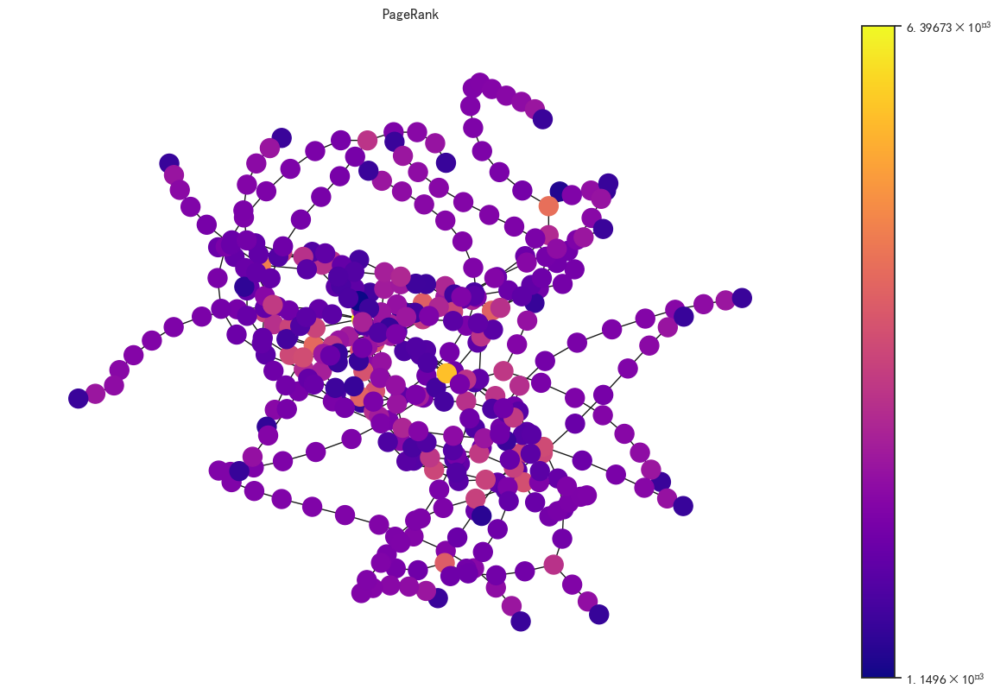

# 导入工具包
import networkx as nx
import seaborn as sns
import pandas as pd
import numpy as np
import random
import matplotlib.pyplot as plt
%matplotlib inline
sns.set(style='white')
sns.set_palette(['#046586', '#28A9A1', '#C9A77C', '#F4A016', '#F6BBC6', '#E71F19']) # Nature 配色
# %matplotlib inline
# %config InlineBackend.figure_format = 'svg'
plt.rcParams['figure.figsize'] = (5, 4) # 2.24, 2.24 设置figure_size尺寸
plt.rcParams['savefig.dpi'] = 300 # 图片像素
plt.rcParams['figure.dpi'] = 100 # 分辨率
plt.rcParams['font.sans-serif'] = 'SimHei' # 显示中文
# plt.rcParams['font.sans-serif'] = 'Times New Roman' # 论文插图用
# 设置正常显示字符
plt.rcParams['axes.unicode_minus'] = False #正常显示负号
# plt.rcParams['font.size'] = 60
PageRank结点重要度#
G = nx.star_graph(7)
nx.draw(G, with_labels=True)
计算PageRank结点重要度#
pagerank = nx.pagerank(G, alpha=0.8)
pagerank
{0: 0.4583348922684132,
1: 0.07738072967594098,
2: 0.07738072967594098,
3: 0.07738072967594098,
4: 0.07738072967594098,
5: 0.07738072967594098,
6: 0.07738072967594098,
7: 0.07738072967594098}
结点连接数Node Degree度分析#
创建图#
# 创建 Erods-Renyi 随机图，也称作binomial graph
# n-节点数
# p-任意两个结点产生连接的概率
G = nx.gnp_random_graph(100, 0.02, seed=2023)
# 初步可视化
pos = nx.spring_layout(G, seed=2023)
nx.draw(G, pos)
最大连通域子图#
Gcc = G.subgraph(sorted(nx.connected_components(G), key=len, reverse=True)[0])
pos = nx.spring_layout(Gcc, seed=2023)
nx.draw_networkx_nodes(Gcc, pos, node_size=20)
nx.draw_networkx_edges(Gcc, pos, alpha=0.4)
<matplotlib.collections.LineCollection at 0x13bdd72d760>
plt.figure(figsize=(12, 8))
pos = nx.spring_layout(Gcc, seed=2023)
# 设置其他可视化形式
options = {
'font_size':12,
'node_size':350,
'node_color':'white',
'edgecolors':'black',
'linewidths':1,
'width':2
}
nx.draw_networkx(Gcc, pos, **options)
plt.title('Connected components of G')
plt.axis('off')
plt.show()
每个结点的连接数（degree）#
G.degree()
DegreeView({0: 2, 1: 2, 2: 3, 3: 1, 4: 3, 5: 1, 6: 2, 7: 1, 8: 1, 9: 2, 10: 3, 11: 0, 12: 0, 13: 1, 14: 1, 15: 3, 16: 3, 17: 1, 18: 0, 19: 3, 20: 0, 21: 0, 22: 3, 23: 1, 24: 1, 25: 1, 26: 2, 27: 1, 28: 5, 29: 2, 30: 1, 31: 0, 32: 2, 33: 3, 34: 5, 35: 3, 36: 3, 37: 1, 38: 2, 39: 1, 40: 2, 41: 5, 42: 1, 43: 1, 44: 3, 45: 2, 46: 1, 47: 5, 48: 2, 49: 0, 50: 0, 51: 3, 52: 0, 53: 5, 54: 3, 55: 0, 56: 3, 57: 2, 58: 3, 59: 4, 60: 3, 61: 0, 62: 1, 63: 2, 64: 3, 65: 2, 66: 2, 67: 5, 68: 1, 69: 1, 70: 1, 71: 3, 72: 1, 73: 3, 74: 3, 75: 1, 76: 2, 77: 2, 78: 4, 79: 1, 80: 3, 81: 2, 82: 2, 83: 1, 84: 4, 85: 1, 86: 1, 87: 3, 88: 1, 89: 4, 90: 2, 91: 2, 92: 1, 93: 3, 94: 0, 95: 3, 96: 0, 97: 0, 98: 2, 99: 1})
degree_sequence = sorted((d for n, d in G.degree()), reverse=True)
degree_sequence
[5,
5,
5,
5,
5,
5,
4,
4,
4,
4,
3,
3,
3,
3,
3,
3,
3,
3,
3,
3,
3,
3,
3,
3,
3,
3,
3,
3,
3,
3,
3,
3,
3,
3,
2,
2,
2,
2,
2,
2,
2,
2,
2,
2,
2,
2,
2,
2,
2,
2,
2,
2,
2,
2,
2,
2,
1,
1,
1,
1,
1,
1,
1,
1,
1,
1,
1,
1,
1,
1,
1,
1,
1,
1,
1,
1,
1,
1,
1,
1,
1,
1,
1,
1,
1,
1,
0,
0,
0,
0,
0,
0,
0,
0,
0,
0,
0,
0,
0,
0]
plt.figure(figsize=(12, 8))
plt.plot(degree_sequence, 'b-', marker='o')
plt.title('Degree Rank Plot', fontsize=20)
plt.ylabel('Degree', fontsize=25)
plt.ylabel('Rnak', fontsize=25)
plt.tick_params(labelsize=20)
plt.show()
结点Degree直方图#
X = np.unique(degree_sequence, return_counts=True)[0]
Y = np.unique(degree_sequence, return_counts=True)[1]
X
array([0, 1, 2, 3, 4, 5])
Y
array([14, 30, 22, 24, 4, 6], dtype=int64)
plt.figure(figsize=(12, 8))
plt.bar(X, Y)
plt.title('Degree Histogram', fontsize=20)
plt.ylabel('Number', fontsize=25)
plt.xlabel('Degree', fontsize=25)
plt.tick_params(labelsize=20)
plt.show()
棒棒糖图特征分析#
导入图#
# 第一个参数指定头部结点数，第二个参数指定尾部结点数
G = nx.lollipop_graph(4, 7)
可视化#
pos = nx.spring_layout(G, seed=2023)
nx.draw(G, pos, with_labels=True)
图数据分析#
# 半径
nx.radius(G)
4
# 直径
nx.diameter(G)
8
# 偏心度：每个结点到图中其他结点的最远距离
nx.eccentricity(G)
{0: 8, 1: 8, 2: 8, 3: 7, 4: 6, 5: 5, 6: 4, 7: 5, 8: 6, 9: 7, 10: 8}
# 中心结点，偏心度与半径相等的结点
nx.center(G)
[6]
# 外围结点，偏心度与直径相等的结点
nx.periphery(G)
[0, 1, 2, 10]
nx.density(G)
0.23636363636363636
n为结点个数，m为连接个数 对于无向图： $\( density = \frac{2m}{n(n-1)} \)$
对于有向图 $\( density = \frac{m}{n(n-1)} \)$ 无连接图的density为0，全连接图的density为1，Multigraph（多重连接图）和带self loop的density可能大于1
3号结点到图中其他结点的最短距离#
node_id = 3
nx.single_source_shortest_path_length(G, node_id)
{3: 0, 0: 1, 1: 1, 2: 1, 4: 1, 5: 2, 6: 3, 7: 4, 8: 5, 9: 6, 10: 7}
每两个结点之间的最短距离#
pathlength = []
for v in G.nodes():
spl = nx.single_source_shortest_path_length(G, v)
for p in spl:
print(f'{v} --> {p} 最短距离 {spl[p]}')
pathlength.append(spl[p])
0 --> 0 最短距离 0
0 --> 1 最短距离 1
0 --> 2 最短距离 1
0 --> 3 最短距离 1
0 --> 4 最短距离 2
0 --> 5 最短距离 3
0 --> 6 最短距离 4
0 --> 7 最短距离 5
0 --> 8 最短距离 6
0 --> 9 最短距离 7
0 --> 10 最短距离 8
1 --> 1 最短距离 0
1 --> 0 最短距离 1
1 --> 2 最短距离 1
1 --> 3 最短距离 1
1 --> 4 最短距离 2
1 --> 5 最短距离 3
1 --> 6 最短距离 4
1 --> 7 最短距离 5
1 --> 8 最短距离 6
1 --> 9 最短距离 7
1 --> 10 最短距离 8
2 --> 2 最短距离 0
2 --> 0 最短距离 1
2 --> 1 最短距离 1
2 --> 3 最短距离 1
2 --> 4 最短距离 2
2 --> 5 最短距离 3
2 --> 6 最短距离 4
2 --> 7 最短距离 5
2 --> 8 最短距离 6
2 --> 9 最短距离 7
2 --> 10 最短距离 8
3 --> 3 最短距离 0
3 --> 0 最短距离 1
3 --> 1 最短距离 1
3 --> 2 最短距离 1
3 --> 4 最短距离 1
3 --> 5 最短距离 2
3 --> 6 最短距离 3
3 --> 7 最短距离 4
3 --> 8 最短距离 5
3 --> 9 最短距离 6
3 --> 10 最短距离 7
4 --> 4 最短距离 0
4 --> 3 最短距离 1
4 --> 5 最短距离 1
4 --> 0 最短距离 2
4 --> 1 最短距离 2
4 --> 2 最短距离 2
4 --> 6 最短距离 2
4 --> 7 最短距离 3
4 --> 8 最短距离 4
4 --> 9 最短距离 5
4 --> 10 最短距离 6
5 --> 5 最短距离 0
5 --> 4 最短距离 1
5 --> 6 最短距离 1
5 --> 3 最短距离 2
5 --> 7 最短距离 2
5 --> 0 最短距离 3
5 --> 1 最短距离 3
5 --> 2 最短距离 3
5 --> 8 最短距离 3
5 --> 9 最短距离 4
5 --> 10 最短距离 5
6 --> 6 最短距离 0
6 --> 5 最短距离 1
6 --> 7 最短距离 1
6 --> 8 最短距离 2
6 --> 4 最短距离 2
6 --> 9 最短距离 3
6 --> 3 最短距离 3
6 --> 0 最短距离 4
6 --> 1 最短距离 4
6 --> 2 最短距离 4
6 --> 10 最短距离 4
7 --> 7 最短距离 0
7 --> 8 最短距离 1
7 --> 6 最短距离 1
7 --> 9 最短距离 2
7 --> 5 最短距离 2
7 --> 10 最短距离 3
7 --> 4 最短距离 3
7 --> 3 最短距离 4
7 --> 0 最短距离 5
7 --> 1 最短距离 5
7 --> 2 最短距离 5
8 --> 8 最短距离 0
8 --> 9 最短距离 1
8 --> 7 最短距离 1
8 --> 10 最短距离 2
8 --> 6 最短距离 2
8 --> 5 最短距离 3
8 --> 4 最短距离 4
8 --> 3 最短距离 5
8 --> 0 最短距离 6
8 --> 1 最短距离 6
8 --> 2 最短距离 6
9 --> 9 最短距离 0
9 --> 8 最短距离 1
9 --> 10 最短距离 1
9 --> 7 最短距离 2
9 --> 6 最短距离 3
9 --> 5 最短距离 4
9 --> 4 最短距离 5
9 --> 3 最短距离 6
9 --> 0 最短距离 7
9 --> 1 最短距离 7
9 --> 2 最短距离 7
10 --> 10 最短距离 0
10 --> 9 最短距离 1
10 --> 8 最短距离 2
10 --> 7 最短距离 3
10 --> 6 最短距离 4
10 --> 5 最短距离 5
10 --> 4 最短距离 6
10 --> 3 最短距离 7
10 --> 0 最短距离 8
10 --> 1 最短距离 8
10 --> 2 最短距离 8
#平均最短距离
sum(pathlength) / len(pathlength)
3.2231404958677685
不同距离的结点对个数#
dist = {}
for p in pathlength:
if p in dist:
dist[p] += 1
else:
dist[p] = 1
dist
{0: 11, 1: 26, 2: 18, 3: 16, 4: 14, 5: 12, 6: 10, 7: 8, 8: 6}
计算结点特征#
# 导入工具包
import networkx as nx
import matplotlib.pyplot as plt
import matplotlib.colors as mcolors
可视化辅助函数#
def draw(G, pos, measures, measure_name):
nodes = nx.draw_networkx_nodes(G, pos, node_size=250, cmap=plt.cm.plasma,
node_color=list(measures.values()),
nodelist=measures.keys())
nodes.set_norm(mcolors.SymLogNorm(linthresh=0.01, linscale=1, base=10))
edges = nx.draw_networkx_edges(G, pos)
plt.title(measure_name)
plt.colorbar(nodes)
plt.axis('off')
plt.show()
导入无向图#
G = nx.karate_club_graph()
pos = nx.spring_layout(G, seed=2023)
nx.draw(G, pos, with_labels=True)
导入有向图#
DiG = nx.DiGraph()
DiG.add_edges_from([(2, 3),(3, 2),(4, 1),(4, 2),(5, 2),(5, 4),
(5, 6),(6, 2),(6, 5),(7, 2),(7, 5),(8, 2),
(8, 5),(9, 2),(9, 5),(10, 5),(11, 5)])
nx.draw(DiG, pos, with_labels=True)
Node degree#
list(nx.degree(G))
[(0, 16),
(1, 9),
(2, 10),
(3, 6),
(4, 3),
(5, 4),
(6, 4),
(7, 4),
(8, 5),
(9, 2),
(10, 3),
(11, 1),
(12, 2),
(13, 5),
(14, 2),
(15, 2),
(16, 2),
(17, 2),
(18, 2),
(19, 3),
(20, 2),
(21, 2),
(22, 2),
(23, 5),
(24, 3),
(25, 3),
(26, 2),
(27, 4),
(28, 3),
(29, 4),
(30, 4),
(31, 6),
(32, 12),
(33, 17)]
dict(G.degree())
{0: 16,
1: 9,
2: 10,
3: 6,
4: 3,
5: 4,
6: 4,
7: 4,
8: 5,
9: 2,
10: 3,
11: 1,
12: 2,
13: 5,
14: 2,
15: 2,
16: 2,
17: 2,
18: 2,
19: 3,
20: 2,
21: 2,
22: 2,
23: 5,
24: 3,
25: 3,
26: 2,
27: 4,
28: 3,
29: 4,
30: 4,
31: 6,
32: 12,
33: 17}
# 字典按值排序
sorted(dict(G.degree()).items(), key=lambda x: x[1], reverse=True)
[(33, 17),
(0, 16),
(32, 12),
(2, 10),
(1, 9),
(3, 6),
(31, 6),
(8, 5),
(13, 5),
(23, 5),
(5, 4),
(6, 4),
(7, 4),
(27, 4),
(29, 4),
(30, 4),
(4, 3),
(10, 3),
(19, 3),
(24, 3),
(25, 3),
(28, 3),
(9, 2),
(12, 2),
(14, 2),
(15, 2),
(16, 2),
(17, 2),
(18, 2),
(20, 2),
(21, 2),
(22, 2),
(26, 2),
(11, 1)]
draw(G, pos, dict(G.degree()), 'Node Degree')
Degree Centrality-无向图#
nx.degree_centrality(G)
{0: 0.48484848484848486,
1: 0.2727272727272727,
2: 0.30303030303030304,
3: 0.18181818181818182,
4: 0.09090909090909091,
5: 0.12121212121212122,
6: 0.12121212121212122,
7: 0.12121212121212122,
8: 0.15151515151515152,
9: 0.06060606060606061,
10: 0.09090909090909091,
11: 0.030303030303030304,
12: 0.06060606060606061,
13: 0.15151515151515152,
14: 0.06060606060606061,
15: 0.06060606060606061,
16: 0.06060606060606061,
17: 0.06060606060606061,
18: 0.06060606060606061,
19: 0.09090909090909091,
20: 0.06060606060606061,
21: 0.06060606060606061,
22: 0.06060606060606061,
23: 0.15151515151515152,
24: 0.09090909090909091,
25: 0.09090909090909091,
26: 0.06060606060606061,
27: 0.12121212121212122,
28: 0.09090909090909091,
29: 0.12121212121212122,
30: 0.12121212121212122,
31: 0.18181818181818182,
32: 0.36363636363636365,
33: 0.5151515151515151}
draw(G, pos, nx.degree_centrality(G), 'Degree Centrality')
Font 'default' does not have a glyph for '-' [U+2212], substituting with a dummy symbol.
Font 'default' does not have a glyph for '-' [U+2212], substituting with a dummy symbol.
Font 'default' does not have a glyph for '-' [U+2212], substituting with a dummy symbol.
Font 'default' does not have a glyph for '-' [U+2212], substituting with a dummy symbol.
Degree Centrality-有向图#
nx.in_degree_centrality(DiG)
{2: 0.7000000000000001,
3: 0.1,
4: 0.1,
1: 0.1,
5: 0.6000000000000001,
6: 0.1,
7: 0.0,
8: 0.0,
9: 0.0,
10: 0.0,
11: 0.0}
nx.out_degree_centrality(DiG)
{2: 0.1,
3: 0.1,
4: 0.2,
1: 0.0,
5: 0.30000000000000004,
6: 0.2,
7: 0.2,
8: 0.2,
9: 0.2,
10: 0.1,
11: 0.1}
draw(DiG, pos, nx.in_degree_centrality(DiG), 'DiGraph Degree Centrality')
Font 'default' does not have a glyph for '-' [U+2212], substituting with a dummy symbol.
Font 'default' does not have a glyph for '-' [U+2212], substituting with a dummy symbol.
Font 'default' does not have a glyph for '-' [U+2212], substituting with a dummy symbol.
Font 'default' does not have a glyph for '-' [U+2212], substituting with a dummy symbol.
Font 'default' does not have a glyph for '-' [U+2212], substituting with a dummy symbol.
Font 'default' does not have a glyph for '-' [U+2212], substituting with a dummy symbol.
Font 'default' does not have a glyph for '-' [U+2212], substituting with a dummy symbol.
Font 'default' does not have a glyph for '-' [U+2212], substituting with a dummy symbol.
draw(DiG, pos, nx.out_degree_centrality(DiG), 'DiGraph Degree Centrality')
Font 'default' does not have a glyph for '-' [U+2212], substituting with a dummy symbol.
Font 'default' does not have a glyph for '-' [U+2212], substituting with a dummy symbol.
Font 'default' does not have a glyph for '-' [U+2212], substituting with a dummy symbol.
Font 'default' does not have a glyph for '-' [U+2212], substituting with a dummy symbol.
Font 'default' does not have a glyph for '-' [U+2212], substituting with a dummy symbol.
Font 'default' does not have a glyph for '-' [U+2212], substituting with a dummy symbol.
Font 'default' does not have a glyph for '-' [U+2212], substituting with a dummy symbol.
Font 'default' does not have a glyph for '-' [U+2212], substituting with a dummy symbol.
Eigenvector Centrality-无向图#
draw(G, pos, nx.eigenvector_centrality(G), 'Eigenvector Centrality')
Font 'default' does not have a glyph for '-' [U+2212], substituting with a dummy symbol.
Font 'default' does not have a glyph for '-' [U+2212], substituting with a dummy symbol.
Font 'default' does not have a glyph for '-' [U+2212], substituting with a dummy symbol.
Font 'default' does not have a glyph for '-' [U+2212], substituting with a dummy symbol.
Eigenvector Centrality-有向图#
draw(DiG, pos, nx.eigenvector_centrality_numpy(DiG), 'Eigenvector Centrality')
Font 'default' does not have a glyph for '-' [U+2212], substituting with a dummy symbol.
Font 'default' does not have a glyph for '-' [U+2212], substituting with a dummy symbol.
Font 'default' does not have a glyph for '-' [U+2212], substituting with a dummy symbol.
Font 'default' does not have a glyph for '-' [U+2212], substituting with a dummy symbol.
Font 'default' does not have a glyph for '-' [U+2212], substituting with a dummy symbol.
Font 'default' does not have a glyph for '-' [U+2212], substituting with a dummy symbol.
Font 'default' does not have a glyph for '-' [U+2212], substituting with a dummy symbol.
Font 'default' does not have a glyph for '-' [U+2212], substituting with a dummy symbol.

Betweeness Centrality (必经之地)#
nx.betweenness_centrality(G)
{0: 0.43763528138528146,
1: 0.053936688311688304,
2: 0.14365680615680618,
3: 0.011909271284271283,
4: 0.0006313131313131313,
5: 0.02998737373737374,
6: 0.029987373737373736,
7: 0.0,
8: 0.05592682780182781,
9: 0.0008477633477633478,
10: 0.0006313131313131313,
11: 0.0,
12: 0.0,
13: 0.04586339586339586,
14: 0.0,
15: 0.0,
16: 0.0,
17: 0.0,
18: 0.0,
19: 0.03247504810004811,
20: 0.0,
21: 0.0,
22: 0.0,
23: 0.017613636363636363,
24: 0.0022095959595959595,
25: 0.0038404882154882154,
26: 0.0,
27: 0.02233345358345358,
28: 0.0017947330447330447,
29: 0.0029220779220779218,
30: 0.014411976911976909,
31: 0.13827561327561325,
32: 0.145247113997114,
33: 0.30407497594997596}
draw(G, pos, nx.betweenness_centrality(G), 'Betweeness Centrality')
Font 'default' does not have a glyph for '-' [U+2212], substituting with a dummy symbol.
Font 'default' does not have a glyph for '-' [U+2212], substituting with a dummy symbol.
Font 'default' does not have a glyph for '-' [U+2212], substituting with a dummy symbol.
Font 'default' does not have a glyph for '-' [U+2212], substituting with a dummy symbol.
Font 'default' does not have a glyph for '-' [U+2212], substituting with a dummy symbol.
Font 'default' does not have a glyph for '-' [U+2212], substituting with a dummy symbol.
Font 'default' does not have a glyph for '-' [U+2212], substituting with a dummy symbol.
Font 'default' does not have a glyph for '-' [U+2212], substituting with a dummy symbol.
Closeness Centrality (去哪都近)#
nx.closeness_centrality(G)
{0: 0.5689655172413793,
1: 0.4852941176470588,
2: 0.559322033898305,
3: 0.4647887323943662,
4: 0.3793103448275862,
5: 0.38372093023255816,
6: 0.38372093023255816,
7: 0.44,
8: 0.515625,
9: 0.4342105263157895,
10: 0.3793103448275862,
11: 0.36666666666666664,
12: 0.3707865168539326,
13: 0.515625,
14: 0.3707865168539326,
15: 0.3707865168539326,
16: 0.28448275862068967,
17: 0.375,
18: 0.3707865168539326,
19: 0.5,
20: 0.3707865168539326,
21: 0.375,
22: 0.3707865168539326,
23: 0.39285714285714285,
24: 0.375,
25: 0.375,
26: 0.3626373626373626,
27: 0.4583333333333333,
28: 0.4520547945205479,
29: 0.38372093023255816,
30: 0.4583333333333333,
31: 0.5409836065573771,
32: 0.515625,
33: 0.55}
draw(G, pos, nx.closeness_centrality(G), 'Closeness Centrality')
Font 'default' does not have a glyph for '-' [U+2212], substituting with a dummy symbol.
Font 'default' does not have a glyph for '-' [U+2212], substituting with a dummy symbol.
Font 'default' does not have a glyph for '-' [U+2212], substituting with a dummy symbol.
Font 'default' does not have a glyph for '-' [U+2212], substituting with a dummy symbol.
Font 'default' does not have a glyph for '-' [U+2212], substituting with a dummy symbol.
Font 'default' does not have a glyph for '-' [U+2212], substituting with a dummy symbol.
Font 'default' does not have a glyph for '-' [U+2212], substituting with a dummy symbol.
Font 'default' does not have a glyph for '-' [U+2212], substituting with a dummy symbol.
Font 'default' does not have a glyph for '-' [U+2212], substituting with a dummy symbol.
Font 'default' does not have a glyph for '-' [U+2212], substituting with a dummy symbol.
Font 'default' does not have a glyph for '-' [U+2212], substituting with a dummy symbol.
Font 'default' does not have a glyph for '-' [U+2212], substituting with a dummy symbol.
PageRank#
nx.pagerank(DiG, alpha=0.8)
{2: 0.35498362527288035,
3: 0.3050906960724587,
4: 0.04755306418089125,
1: 0.04012092964665928,
5: 0.09920010077470663,
6: 0.04755306418089125,
7: 0.021099703974302532,
8: 0.021099703974302532,
9: 0.021099703974302532,
10: 0.021099703974302532,
11: 0.021099703974302532}
draw(DiG, pos, nx.pagerank(DiG, alpha=0.85), 'DiGraph PageRank')
Font 'default' does not have a glyph for '-' [U+2212], substituting with a dummy symbol.
Font 'default' does not have a glyph for '-' [U+2212], substituting with a dummy symbol.
Font 'default' does not have a glyph for '-' [U+2212], substituting with a dummy symbol.
Font 'default' does not have a glyph for '-' [U+2212], substituting with a dummy symbol.
Katz Centrality#
draw(G, pos, nx.katz_centrality(G, alpha=0.1, beta=1.0), 'G Katz Centrality')
Font 'default' does not have a glyph for '-' [U+2212], substituting with a dummy symbol.
Font 'default' does not have a glyph for '-' [U+2212], substituting with a dummy symbol.
Font 'default' does not have a glyph for '-' [U+2212], substituting with a dummy symbol.
Font 'default' does not have a glyph for '-' [U+2212], substituting with a dummy symbol.
Font 'default' does not have a glyph for '-' [U+2212], substituting with a dummy symbol.
Font 'default' does not have a glyph for '-' [U+2212], substituting with a dummy symbol.
Font 'default' does not have a glyph for '-' [U+2212], substituting with a dummy symbol.
Font 'default' does not have a glyph for '-' [U+2212], substituting with a dummy symbol.
Font 'default' does not have a glyph for '-' [U+2212], substituting with a dummy symbol.
Font 'default' does not have a glyph for '-' [U+2212], substituting with a dummy symbol.
Font 'default' does not have a glyph for '-' [U+2212], substituting with a dummy symbol.
Font 'default' does not have a glyph for '-' [U+2212], substituting with a dummy symbol.
draw(DiG, pos, nx.katz_centrality(DiG, alpha=0.1, beta=1.0), 'DiG Katz Centrality')
Font 'default' does not have a glyph for '-' [U+2212], substituting with a dummy symbol.
Font 'default' does not have a glyph for '-' [U+2212], substituting with a dummy symbol.
Font 'default' does not have a glyph for '-' [U+2212], substituting with a dummy symbol.
Font 'default' does not have a glyph for '-' [U+2212], substituting with a dummy symbol.
Font 'default' does not have a glyph for '-' [U+2212], substituting with a dummy symbol.
Font 'default' does not have a glyph for '-' [U+2212], substituting with a dummy symbol.
Font 'default' does not have a glyph for '-' [U+2212], substituting with a dummy symbol.
Font 'default' does not have a glyph for '-' [U+2212], substituting with a dummy symbol.
HITS Hubs and Authorities#
h, a = nx.hits(DiG)
draw(DiG, pos, h, 'DiG HITS Hubs')
draw(DiG, pos, a, 'DiG HITS Authorities')
Font 'default' does not have a glyph for '-' [U+2212], substituting with a dummy symbol.
Font 'default' does not have a glyph for '-' [U+2212], substituting with a dummy symbol.
Font 'default' does not have a glyph for '-' [U+2212], substituting with a dummy symbol.
Font 'default' does not have a glyph for '-' [U+2212], substituting with a dummy symbol.
Font 'default' does not have a glyph for '-' [U+2212], substituting with a dummy symbol.
Font 'default' does not have a glyph for '-' [U+2212], substituting with a dummy symbol.
Font 'default' does not have a glyph for '-' [U+2212], substituting with a dummy symbol.
Font 'default' does not have a glyph for '-' [U+2212], substituting with a dummy symbol.
Font 'default' does not have a glyph for '-' [U+2212], substituting with a dummy symbol.
Font 'default' does not have a glyph for '-' [U+2212], substituting with a dummy symbol.
Font 'default' does not have a glyph for '-' [U+2212], substituting with a dummy symbol.
Font 'default' does not have a glyph for '-' [U+2212], substituting with a dummy symbol.
Font 'default' does not have a glyph for '-' [U+2212], substituting with a dummy symbol.
Font 'default' does not have a glyph for '-' [U+2212], substituting with a dummy symbol.
Font 'default' does not have a glyph for '-' [U+2212], substituting with a dummy symbol.
Font 'default' does not have a glyph for '-' [U+2212], substituting with a dummy symbol.

三角形个数#
nx.triangles(G)
{0: 18,
1: 12,
2: 11,
3: 10,
4: 2,
5: 3,
6: 3,
7: 6,
8: 5,
9: 0,
10: 2,
11: 0,
12: 1,
13: 6,
14: 1,
15: 1,
16: 1,
17: 1,
18: 1,
19: 1,
20: 1,
21: 1,
22: 1,
23: 4,
24: 1,
25: 1,
26: 1,
27: 1,
28: 1,
29: 4,
30: 3,
31: 3,
32: 13,
33: 15}
draw(G, pos, nx.triangles(G), 'Triangles')
Font 'default' does not have a glyph for '-' [U+2212], substituting with a dummy symbol.
Font 'default' does not have a glyph for '-' [U+2212], substituting with a dummy symbol.
Font 'default' does not have a glyph for '-' [U+2212], substituting with a dummy symbol.
Font 'default' does not have a glyph for '-' [U+2212], substituting with a dummy symbol.
Font 'default' does not have a glyph for '-' [U+2212], substituting with a dummy symbol.
Font 'default' does not have a glyph for '-' [U+2212], substituting with a dummy symbol.
Font 'default' does not have a glyph for '-' [U+2212], substituting with a dummy symbol.
Font 'default' does not have a glyph for '-' [U+2212], substituting with a dummy symbol.
Clustering Coefficient#
nx.clustering(G)
{0: 0.15,
1: 0.3333333333333333,
2: 0.24444444444444444,
3: 0.6666666666666666,
4: 0.6666666666666666,
5: 0.5,
6: 0.5,
7: 1.0,
8: 0.5,
9: 0,
10: 0.6666666666666666,
11: 0,
12: 1.0,
13: 0.6,
14: 1.0,
15: 1.0,
16: 1.0,
17: 1.0,
18: 1.0,
19: 0.3333333333333333,
20: 1.0,
21: 1.0,
22: 1.0,
23: 0.4,
24: 0.3333333333333333,
25: 0.3333333333333333,
26: 1.0,
27: 0.16666666666666666,
28: 0.3333333333333333,
29: 0.6666666666666666,
30: 0.5,
31: 0.2,
32: 0.19696969696969696,
33: 0.11029411764705882}
draw(G, pos, nx.clustering(G), 'Clustering Coefficients')
Font 'default' does not have a glyph for '-' [U+2212], substituting with a dummy symbol.
Font 'default' does not have a glyph for '-' [U+2212], substituting with a dummy symbol.
Font 'default' does not have a glyph for '-' [U+2212], substituting with a dummy symbol.
Font 'default' does not have a glyph for '-' [U+2212], substituting with a dummy symbol.
Font 'default' does not have a glyph for '-' [U+2212], substituting with a dummy symbol.
Font 'default' does not have a glyph for '-' [U+2212], substituting with a dummy symbol.
Font 'default' does not have a glyph for '-' [U+2212], substituting with a dummy symbol.
Font 'default' does not have a glyph for '-' [U+2212], substituting with a dummy symbol.
Bridges#
如果某个连接断掉，会使连通域个数增加，则该连接是bridg
bridge不属于环的一部分
pos = nx.spring_layout(G, seed=675)
nx.draw(G, pos, with_labels=True)
list(nx.bridges(G))
[(0, 11)]
Common Neighbors 和 Jaccard Coefficient#
sorted(nx.common_neighbors(G, 0, 4))
[6, 10]
preds = nx.jaccard_coefficient(G, [(0, 1), (2, 3)])
for u, v, p in preds:
print(f'({u}, {v}) -> {p:.8f}')
(0, 1) -> 0.38888889
(2, 3) -> 0.33333333
preds = nx.adamic_adar_index(G, [(0, 1), (2, 3)])
for u, v, p in preds:
print(f'({u}, {v}) -> {p:.8f}')
(0, 1) -> 6.13071687
(2, 3) -> 2.15847583
Katz Index#
结点u到结点v，路径为k的路径个数
import networkx as nx
import numpy as np
from numpy.linalg import inv
G = nx.karate_club_graph()
len(G.nodes())
34
# 计算主特征向量
L = nx.normalized_laplacian_matrix(G)
e = np.linalg.eigvals(L.A)
print(f'最大特征值', max(e))
# 折减系数
beta = 1/max(e)
# 创建单位矩阵
I = np.identity(len(G.nodes()))
# 计算Katz index
S = inv(I - nx.to_numpy_array(G) * beta) - I
最大特征值 1.7146113474736127
S.shape
(34, 34)
S
array([[-0.630971 , 0.03760311, -0.50718655, ..., 0.22028562,
0.08051109, 0.0187629 ],
[ 0.03760311, 0.0313979 , -1.09231501, ..., 0.18920621,
-0.09098329, 0.08188737],
[-0.50718655, -1.09231501, 0.79993439, ..., -0.4511988 ,
0.17631358, -0.23914987],
...,
[ 0.22028562, 0.18920621, -0.4511988 , ..., -0.07349891,
0.47525815, -0.0457034 ],
[ 0.08051109, -0.09098329, 0.17631358, ..., 0.47525815,
-0.28781332, -0.70104834],
[ 0.0187629 , 0.08188737, -0.23914987, ..., -0.0457034 ,
-0.70104834, -0.50717615]])
北京上海地铁站图数据挖掘#
定义可视化辅助函数#
def draw(G, pos, measures, measure_name):
nodes = nx.draw_networkx_nodes(G, pos, node_size=250, cmap=plt.cm.plasma,
node_color=list(measures.values()),
nodelist=measures.keys())
nodes.set_norm(mcolors.SymLogNorm(linthresh=0.01, linscale=1, base=10))
edges = nx.draw_networkx_edges(G, pos)
plt.title(measure_name)
plt.colorbar(nodes)
plt.axis('off')
plt.show()
字典按值排序辅助函数#
def dict_sort_by_value(dict_input):
"""
输入字典，输出按值排序的字典
"""
return sorted(dict_input.items(), key=lambda x: x[1], reverse=True)
导入地铁站连接表#
# 上海地铁站连接表
import pandas as pd
df = pd.read_csv(r'./data/shanghai_subway.csv')
df
| 前一站 | 后一站 | 地铁线 | 时间（分钟） | |
|---|---|---|---|---|
| 0 | 莘庄 | 外环路 | 1 | 2 |
| 1 | 外环路 | 莲花路 | 1 | 2 |
| 2 | 莲花路 | 锦江乐园 | 1 | 3 |
| 3 | 锦江乐园 | 上海南站 | 1 | 3 |
| 4 | 上海南站 | 漕宝路 | 1 | 3 |
| ... | ... | ... | ... | ... |
| 487 | 抚顺路 | 国权路 | 18 | 2 |
| 488 | 国权路 | 复旦大学 | 18 | 3 |
| 489 | 复旦大学 | 上海财经大学 | 18 | 2 |
| 490 | 上海财经大学 | 殷高路 | 18 | 2 |
| 491 | 殷高路 | 长江南路 | 18 | 2 |
492 rows × 4 columns
创建图#
创建无向图#
G = nx.Graph()
从连接表创建图#
for idx, row in df.iterrows():
G.add_edges_from([(row['前一站'], row['后一站'])], line=row['地铁线'], time=row['时间（分钟）'])
检查是否导入成功#
# 节点个数
G.number_of_nodes()
402
# 连接个数
G.number_of_edges()
480
# 查看连接特征
G.edges[('同济大学', '四平路')]
{'line': 10, 'time': 2}
可视化#
# j结点排版布局，默认弹簧布局
pos = nx.spring_layout(G, seed=123)
plt.figure(figsize=(15, 15))
nx.draw(G, pos)
shorest path 最短路径#
# 任意两节点之间是否存在路径
nx.has_path(G, source='昌吉东路', target='同济大学')
True
# 任意两结点之间的最短路径
nx.shortest_path(G, source='昌吉东路', target='同济大学', weight='time')
['昌吉东路',
'上海赛车场',
'嘉定新城',
'马陆',
'陈翔公路',
'南翔',
'桃浦新村',
'武威路',
'祁连山路',
'李子园',
'上海西站',
'真如',
'枫桥路',
'曹杨路',
'镇坪路',
'中潭路',
'上海火车站',
'宝山路',
'海伦路',
'邮电新村',
'四平路',
'同济大学']
# 任意两结点之间的最短路径
nx.shortest_path_length(G, source='昌吉东路', target='同济大学', weight='time')
59
# 全图平均最短路径
nx.average_shortest_path_length(G, weight='time')
41.06494956638255
# 某一站去其他站的最短路径
# nx.single_source_shortest_path(G, source='同济大学')
# # 某一站去其他站的最短路径长度
# nx.single_source_shortest_path_length(G, source='同济大学')
地铁导航系统#
# 指定起始站和终点站
A_station = '昌吉东路'
B_station = '同济大学'
# 获取最短路径
shorest_path_list = nx.shortest_path(G, source=A_station, target=B_station, weight='time')
for i in range(len(shorest_path_list) - 1):
previous_station = shorest_path_list[i]
next_station = shorest_path_list[i + 1]
line_id = G.edges[(previous_station, next_station)]['line']
time = G.edges[(previous_station, next_station)]['time']
print(f'{previous_station} -> {next_station} {line_id}号线 {time}分钟')
昌吉东路 -> 上海赛车场 11号线 4分钟
上海赛车场 -> 嘉定新城 11号线 4分钟
嘉定新城 -> 马陆 11号线 3分钟
马陆 -> 陈翔公路 11号线 4分钟
陈翔公路 -> 南翔 11号线 3分钟
南翔 -> 桃浦新村 11号线 3分钟
桃浦新村 -> 武威路 11号线 3分钟
武威路 -> 祁连山路 11号线 2分钟
祁连山路 -> 李子园 11号线 3分钟
李子园 -> 上海西站 11号线 2分钟
上海西站 -> 真如 11号线 3分钟
真如 -> 枫桥路 11号线 2分钟
枫桥路 -> 曹杨路 11号线 2分钟
曹杨路 -> 镇坪路 4号线 3分钟
镇坪路 -> 中潭路 4号线 2分钟
中潭路 -> 上海火车站 4号线 3分钟
上海火车站 -> 宝山路 4号线 4分钟
宝山路 -> 海伦路 4号线 3分钟
海伦路 -> 邮电新村 10号线 2分钟
邮电新村 -> 四平路 10号线 2分钟
四平路 -> 同济大学 10号线 2分钟
Node Degree#
# dict_sort_by_value(dict(G.degree()))
plt.figure(figsize=(15, 10))
draw(G, pos, dict(G.degree()), 'Node Degree')
plt.figure(figsize=(15, 10))
draw(G, pos, nx.degree_centrality(G), 'Degree centrality')
Font 'default' does not have a glyph for '-' [U+2212], substituting with a dummy symbol.
Font 'default' does not have a glyph for '-' [U+2212], substituting with a dummy symbol.
Font 'default' does not have a glyph for '-' [U+2212], substituting with a dummy symbol.
Font 'default' does not have a glyph for '-' [U+2212], substituting with a dummy symbol.
Eigenvector Centrality (可能不收敛)#
# nx.eigenvector_centrality(G)
plt.figure(figsize=(15, 10))
draw(G, pos, nx.eigenvector_centrality(G), 'Eigenvector centrality')
Font 'default' does not have a glyph for '-' [U+2212], substituting with a dummy symbol.
Font 'default' does not have a glyph for '-' [U+2212], substituting with a dummy symbol.
Font 'default' does not have a glyph for '-' [U+2212], substituting with a dummy symbol.
Font 'default' does not have a glyph for '-' [U+2212], substituting with a dummy symbol.
Font 'default' does not have a glyph for '-' [U+2212], substituting with a dummy symbol.
Font 'default' does not have a glyph for '-' [U+2212], substituting with a dummy symbol.
Font 'default' does not have a glyph for '-' [U+2212], substituting with a dummy symbol.
Font 'default' does not have a glyph for '-' [U+2212], substituting with a dummy symbol.
Closeness centrality (去哪都近)#
plt.figure(figsize=(15, 10))
draw(G, pos, nx.closeness_centrality(G), 'Closeness Centrality')
Font 'default' does not have a glyph for '-' [U+2212], substituting with a dummy symbol.
Font 'default' does not have a glyph for '-' [U+2212], substituting with a dummy symbol.
Font 'default' does not have a glyph for '-' [U+2212], substituting with a dummy symbol.
Font 'default' does not have a glyph for '-' [U+2212], substituting with a dummy symbol.
Font 'default' does not have a glyph for '-' [U+2212], substituting with a dummy symbol.
Font 'default' does not have a glyph for '-' [U+2212], substituting with a dummy symbol.
Font 'default' does not have a glyph for '-' [U+2212], substituting with a dummy symbol.
Font 'default' does not have a glyph for '-' [U+2212], substituting with a dummy symbol.

PageRank#
plt.figure(figsize=(15, 10))
draw(G, pos, nx.pagerank(G), 'PageRank')
Font 'default' does not have a glyph for '-' [U+2212], substituting with a dummy symbol.
Font 'default' does not have a glyph for '-' [U+2212], substituting with a dummy symbol.
Font 'default' does not have a glyph for '-' [U+2212], substituting with a dummy symbol.
Font 'default' does not have a glyph for '-' [U+2212], substituting with a dummy symbol.
Font 'default' does not have a glyph for '-' [U+2212], substituting with a dummy symbol.
Font 'default' does not have a glyph for '-' [U+2212], substituting with a dummy symbol.
Font 'default' does not have a glyph for '-' [U+2212], substituting with a dummy symbol.
Font 'default' does not have a glyph for '-' [U+2212], substituting with a dummy symbol.

社群属性Clustering#
三角形个数#
# nx.triangles(G)
# dict_sort_by_value(nx.triangles(G))
plt.figure(figsize=(10, 5))
draw(G, pos, nx.triangles(G), 'Triangels')
Font 'default' does not have a glyph for '-' [U+2212], substituting with a dummy symbol.
Font 'default' does not have a glyph for '-' [U+2212], substituting with a dummy symbol.
Font 'default' does not have a glyph for '-' [U+2212], substituting with a dummy symbol.
Font 'default' does not have a glyph for '-' [U+2212], substituting with a dummy symbol.
Font 'default' does not have a glyph for '-' [U+2212], substituting with a dummy symbol.
Font 'default' does not have a glyph for '-' [U+2212], substituting with a dummy symbol.
Font 'default' does not have a glyph for '-' [U+2212], substituting with a dummy symbol.
Font 'default' does not have a glyph for '-' [U+2212], substituting with a dummy symbol.
Clustering coefficients#
plt.figure(figsize=(10, 5))
draw(G, pos, nx.clustering(G), 'Clustering coefficients')
Font 'default' does not have a glyph for '-' [U+2212], substituting with a dummy symbol.
Font 'default' does not have a glyph for '-' [U+2212], substituting with a dummy symbol.
Font 'default' does not have a glyph for '-' [U+2212], substituting with a dummy symbol.
Font 'default' does not have a glyph for '-' [U+2212], substituting with a dummy symbol.
Font 'default' does not have a glyph for '-' [U+2212], substituting with a dummy symbol.
Font 'default' does not have a glyph for '-' [U+2212], substituting with a dummy symbol.
Font 'default' does not have a glyph for '-' [U+2212], substituting with a dummy symbol.
Font 'default' does not have a glyph for '-' [U+2212], substituting with a dummy symbol.
计算全图Graphlet个数#
import itertools
导入全图#
G = nx.karate_club_graph()
plt.figure(figsize=(10, 8))
pos = nx.spring_layout(G, seed=123)
nx.draw(G, pos, with_labels=True)
匹配Graphlet,统计个数#
num = 0
for sub_nodes in itertools.combinations(G.nodes(), len(target.nodes())): # 遍历全图中，符合graphlet结点个数的所有结点组合
subg = G.subgraph(sub_nodes) # 从全图中抽取子图
if nx.is_connected(subg) and nx.is_isomorphic(subg, target): # 如果子图是完整连通域 并且符合graphlet特征。输出原图结点编号
num += 1
print(subg.edges())
[(0, 1), (0, 2), (1, 2)]
[(0, 1), (0, 3), (1, 3)]
[(0, 1), (0, 7), (1, 7)]
[(0, 1), (0, 13), (1, 13)]
[(0, 1), (0, 17), (1, 17)]
[(0, 1), (0, 19), (1, 19)]
[(0, 1), (0, 21), (1, 21)]
[(0, 2), (0, 3), (2, 3)]
[(0, 2), (0, 7), (2, 7)]
[(0, 2), (0, 8), (8, 2)]
[(0, 2), (0, 13), (2, 13)]
[(0, 3), (0, 7), (3, 7)]
[(0, 3), (0, 12), (3, 12)]
[(0, 3), (0, 13), (3, 13)]
[(0, 4), (0, 6), (4, 6)]
[(0, 4), (0, 10), (10, 4)]
[(0, 5), (0, 6), (5, 6)]
[(0, 5), (0, 10), (10, 5)]
[(1, 2), (1, 3), (2, 3)]
[(1, 2), (1, 7), (2, 7)]
[(1, 2), (1, 13), (2, 13)]
[(1, 3), (1, 7), (3, 7)]
[(1, 3), (1, 13), (3, 13)]
[(2, 3), (2, 7), (3, 7)]
[(2, 3), (2, 13), (3, 13)]
[(8, 2), (8, 32), (2, 32)]
[(16, 5), (16, 6), (5, 6)]
[(8, 30), (8, 32), (32, 30)]
[(8, 30), (8, 33), (33, 30)]
[(8, 32), (8, 33), (33, 32)]
[(32, 14), (32, 33), (33, 14)]
[(32, 15), (32, 33), (33, 15)]
[(32, 18), (32, 33), (33, 18)]
[(32, 20), (32, 33), (33, 20)]
[(32, 22), (32, 33), (33, 22)]
[(33, 23), (33, 27), (27, 23)]
[(32, 23), (32, 29), (29, 23)]
[(33, 23), (33, 29), (29, 23)]
[(32, 23), (32, 33), (33, 23)]
[(24, 25), (24, 31), (25, 31)]
[(33, 26), (33, 29), (26, 29)]
[(33, 28), (33, 31), (28, 31)]
[(32, 29), (32, 33), (33, 29)]
[(32, 30), (32, 33), (33, 30)]
[(32, 31), (32, 33), (33, 31)]
拉普拉斯矩阵特征值分解#
创建图#
n = 1000 # 结点个数
m = 5000 # 连接个数
G = nx.gnm_random_graph(n, m, seed=5040)
邻接矩阵（Adjacency Matrix）#
A = nx.adjacency_matrix(G)
A.shape
(1000, 1000)
A.todense()
matrix([[0, 0, 0, ..., 0, 0, 0],
[0, 0, 0, ..., 0, 0, 0],
[0, 0, 0, ..., 0, 0, 0],
...,
[0, 0, 0, ..., 0, 0, 0],
[0, 0, 0, ..., 0, 0, 0],
[0, 0, 0, ..., 0, 0, 0]], dtype=int32)
拉普拉斯矩阵（Laplacian Matrix）#
\[
L = D - A
\]
L 为拉普拉斯矩阵
D 为结点degree对角矩阵
A 为邻接矩阵
L = nx.laplacian_matrix(G)
L.shape
(1000, 1000)
# 结点degree对角矩阵
D = L + A
D.todense()
matrix([[12, 0, 0, ..., 0, 0, 0],
[ 0, 6, 0, ..., 0, 0, 0],
[ 0, 0, 8, ..., 0, 0, 0],
...,
[ 0, 0, 0, ..., 8, 0, 0],
[ 0, 0, 0, ..., 0, 6, 0],
[ 0, 0, 0, ..., 0, 0, 7]], dtype=int32)
归一化拉普拉斯矩阵（Normalized Laplacian Matrix）#
\(L_n = D^{-\frac{1}{2}}LD^{-\frac{1}{2}}\)
L_n = nx.normalized_laplacian_matrix(G)
L_n.shape
(1000, 1000)
L_n.todense()
matrix([[1., 0., 0., ..., 0., 0., 0.],
[0., 1., 0., ..., 0., 0., 0.],
[0., 0., 1., ..., 0., 0., 0.],
...,
[0., 0., 0., ..., 1., 0., 0.],
[0., 0., 0., ..., 0., 1., 0.],
[0., 0., 0., ..., 0., 0., 1.]])
plt.imshow(L_n.todense())
<matplotlib.image.AxesImage at 0x13bddf8b130>
特征值分布直方图#
plt.figure(figsize=(12, 8))
plt.hist(e, bins=100)
plt.xlim(0, 2)
plt.title('Eigenvalue Histogram', fontsize=20)
plt.ylabel('Frequency', fontsize=25)
plt.xlabel('Eigenvalue', fontsize=25)
plt.tick_params(labelsize=20)
plt.show()